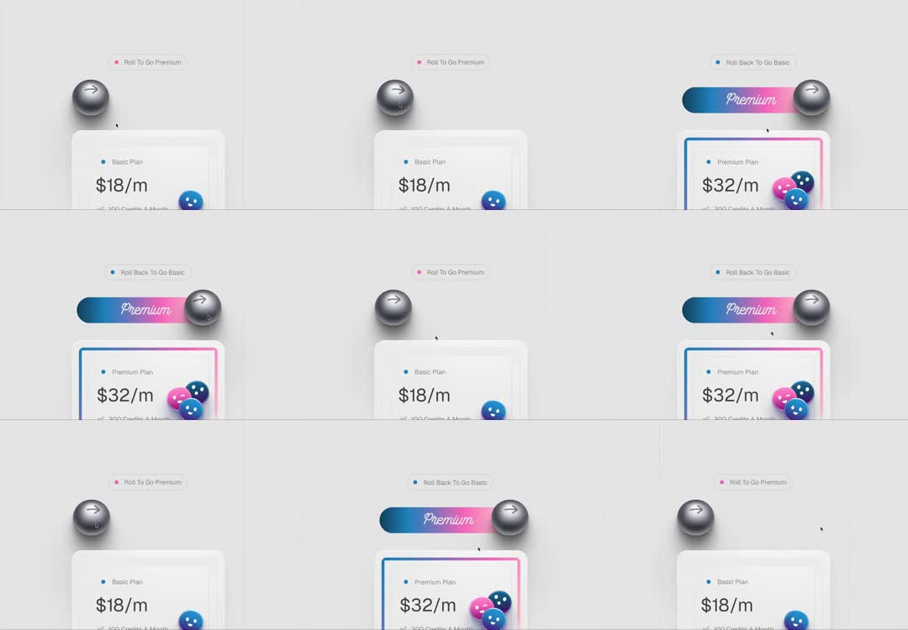

Toggle to premium: a skeuomorphic metal ball sits in a slot above the plan card ('Roll To Go Premium'); rolling the ball to the right drags a blue-pink gradient 'Premium' pill out from behind it, and the plan card upgrades - Basic Plan $18/m flips to Premium Plan $32/m with a gradient border while 3 glossy candy balls (pink/blue/navy) spill onto the card's corner; rolling back reverses everything.
Media
Frame-by-frame

0-20%
Basic state: brushed-metal ball (arrow glyph) parked left, hint 'Roll To Go Premium' in pink; card shows 'Basic Plan $18/m', one small blue ball resting on the corner.
20-40%
Ball rolls right along its track with a rolling rotation; behind it a gradient pill (blue -> pink, script 'Premium') is revealed/wipes in.
40-60%
Card upgrades: border becomes blue-pink gradient, label 'Premium Plan $32/m', and the candy balls bounce in one by one (pink, navy, blue) settling on the top-right corner.
60-100%
Hint swaps to 'Roll Back To Go Basic' (blue); rolling the ball left retracts the pill, balls pop off in reverse, card returns to Basic.
Build prompt
Rebuild this interaction 1:1: toggle to premium - a skeuomorphic metal ball sits in a slot above the plan card ("Roll To Go Premium"); rolling the ball right drags a blue-pink gradient "Premium" pill out from behind it, and the plan card upgrades (Basic $18/m -> Premium $32/m with a gradient border) while 3 glossy candy balls (pink/blue/navy) spill onto the card's corner. Rolling back reverses everything.
## Integration
Integration: stack-agnostic spec - springs given as stiffness/damping, timed motions as duration + curve, canvas/shader notes are perf guidance only; map every value to your framework and animation library of choice.
## Scene
Above the plan card: a track with a brushed-metal ball knob (arrow glyph) parked left; pink hint "Roll To Go Premium". Card: "Basic Plan $18/m", one small blue ball resting on the corner. Premium state: gradient border, "Premium Plan $32/m", three candy balls on the top-right corner, hint swaps to blue "Roll Back To Go Basic".
## Motion spec
Pattern: drag/tap toggle with staged rewards.
- Roll: ball translates along the track with rolling rotation (rotation = distance / radius), 500ms ease-out.
- Pill reveal: the blue-pink gradient "Premium" pill (script type) wipes in behind the ball via clip-path, 400ms.
- Card upgrade: border becomes the blue-pink gradient (200ms); label and price crossfade (200ms).
- Candy balls: bounce in one by one (pink, navy, blue), stagger 120ms, spring overshoot (scale 0 -> 1.1 -> 1), settling on the corner.
- Roll back: pill retracts (clip reverse), balls pop off in reverse order, card returns to Basic.
## Calibration
- The ball's rotation must match its travel (rolling, not sliding) - this is the skeuomorphism working.
- Candy ball springs are the dopamine: overshoot stiffness ~300, damping ~15.
- Pill wipe 400ms tracked just behind the ball's edge, like the ball drags it out.
## Reduced motion
Ball slides without rolling (300ms); pill and card crossfade; candy balls appear without bounce.
## Don't miss
- The pill comes from BEHIND the ball - it must read as revealed by the roll, not appearing beside it.
- Hint text swaps color with state (pink to premium, blue to basic).
- Candy balls land on the card's corner and stay as part of the premium state - they are not confetti.
Mechanics
trigger
ball drag/roll (or tap to toggle)
elements
metal ball knob, gradient Premium pill, plan card, 3 candy balls, hint label
properties
ball x + rotation (rolling), pill clip wipe, card border gradient + price crossfade, candy ball spring entrances
timing
roll 500ms; pill wipe 400ms; balls stagger 120ms each with bounce
easing
ball rolls with ease-out; candy balls spring (overshoot)